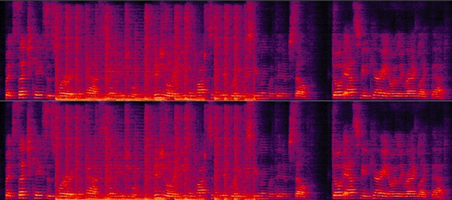
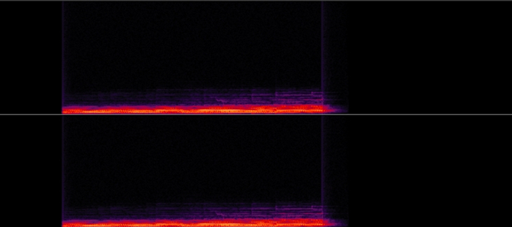
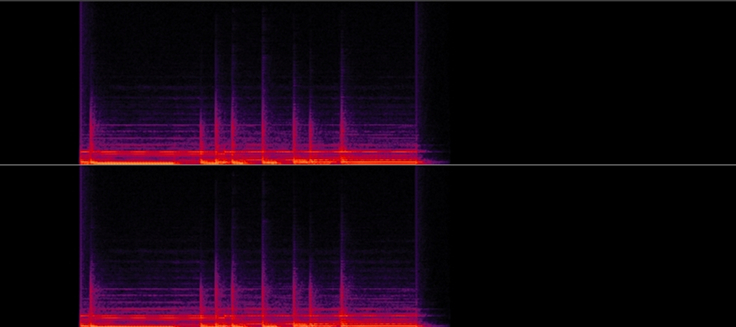
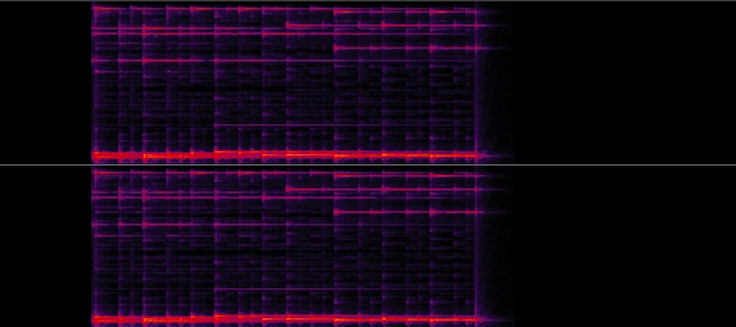
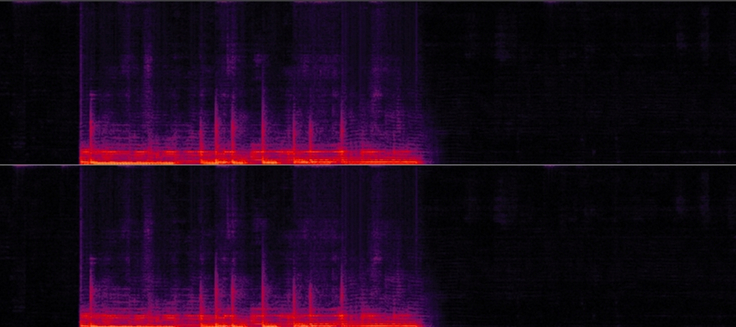
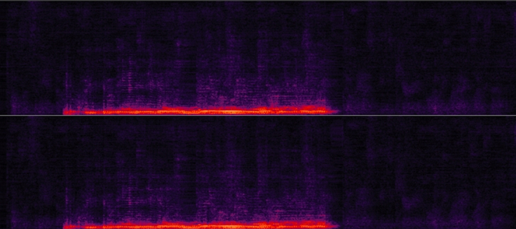
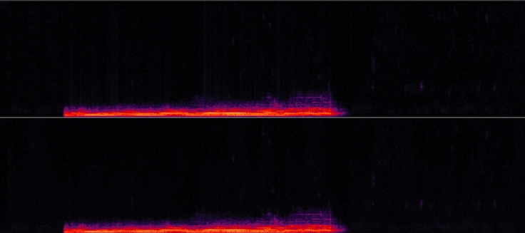
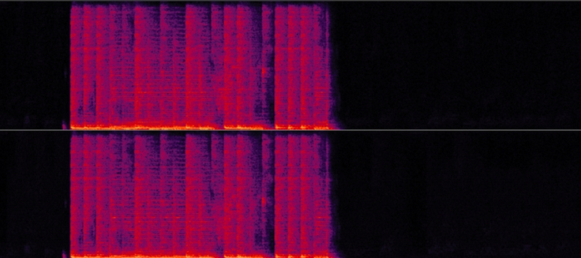
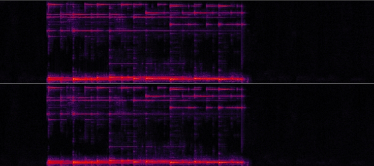

| Signals | Sample 1 | Sample 2 | Sample 3 | Sample 4 |
|---|---|---|---|---|
| Microphone signals. The top is first microphone, and the bottom is second microphone. | ||||
|  |
|
|||
| Target signals | ||||
|  |  |  | ||
| Cheng et al.[1] | ||||
|
|
 | |||
| Zhang[2] | ||||
|  |
|
|||
| LCSM | ||||
|  |
|
 |  | |